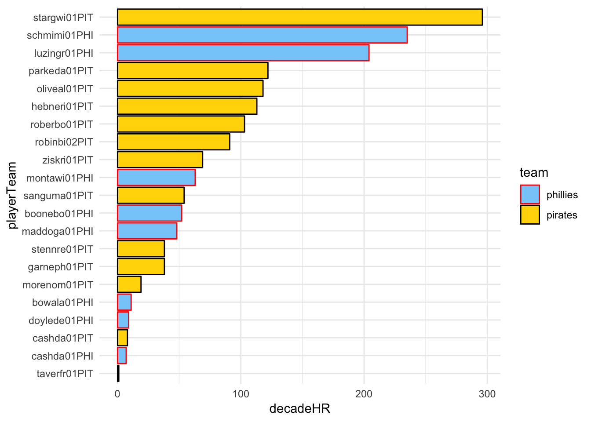
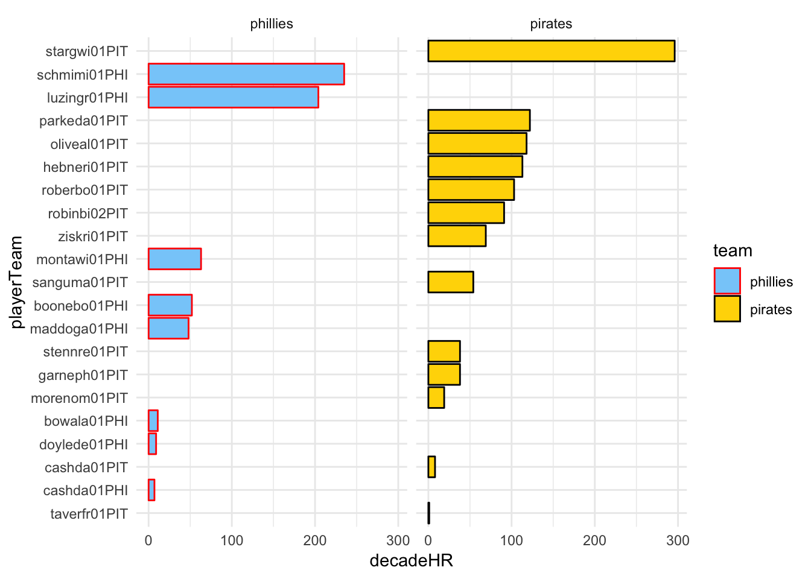

Chapter 13 Putting All Together
As a final exercise, let’s do the example from the last chapter, but with the Pirates as well.
phils<-Batting %>%
filter(yearID >= 1970 & yearID <= 1979) %>%
filter(teamID == "PHI") %>%
group_by(playerID) %>%
summarize(decadeHR = sum(HR),decadeAB = sum(AB)) %>%
mutate(playerTeam = paste(playerID,"PHI",sep=""),team="phillies") %>%
select(playerTeam,decadeHR,decadeAB,team) %>%
filter(decadeAB >= 1500)
data.frame(phils)## playerTeam decadeHR decadeAB team
## 1 boonebo01PHI 52 2983 phillies
## 2 bowala01PHI 11 5915 phillies
## 3 cashda01PHI 7 2052 phillies
## 4 doylede01PHI 9 1567 phillies
## 5 luzingr01PHI 204 4262 phillies
## 6 maddoga01PHI 48 2622 phillies
## 7 montawi01PHI 63 2318 phillies
## 8 schmimi01PHI 235 3713 philliespirates<-Batting %>%
filter(yearID >= 1970 & yearID <= 1979) %>%
filter(teamID == "PIT") %>%
group_by(playerID) %>%
summarize(decadeHR = sum(HR),decadeAB = sum(AB)) %>%
mutate(playerTeam = paste(playerID,"PIT",sep=""),team="pirates") %>%
select(playerTeam,decadeHR,decadeAB,team) %>%
filter(decadeAB >= 1500)
data.frame(pirates)## playerTeam decadeHR decadeAB team
## 1 cashda01PIT 8 1549 pirates
## 2 garneph01PIT 38 1662 pirates
## 3 hebneri01PIT 113 3200 pirates
## 4 morenom01PIT 19 1830 pirates
## 5 oliveal01PIT 118 4555 pirates
## 6 parkeda01PIT 122 3294 pirates
## 7 roberbo01PIT 103 2051 pirates
## 8 robinbi02PIT 91 2020 pirates
## 9 sanguma01PIT 54 3888 pirates
## 10 stargwi01PIT 296 4399 pirates
## 11 stennre01PIT 38 4037 pirates
## 12 taverfr01PIT 1 2476 pirates
## 13 ziskri01PIT 69 2006 piratesThere are a few new ideas here. First, we have used mutate to create two new columns. We created the “playerTeam” column by pasting the teamID onto the playerID. We did this because there is one player who played for both teams during the ’70’s and we need to have distinct categories. So “playerTeam” will be our category column instead of “playerID”. We have also added a “team” column so that we can easily distinguish between Phillies and Pirate records when plotting.
We can now stack the two data frames in this way:
philsPirates <- rbind(phils,pirates) %>%
arrange(decadeHR)
philsPirates$playerTeam <- factor(philsPirates$playerTeam,levels=philsPirates$playerTeam)
data.frame(philsPirates)## playerTeam decadeHR decadeAB team
## 1 taverfr01PIT 1 2476 pirates
## 2 cashda01PHI 7 2052 phillies
## 3 cashda01PIT 8 1549 pirates
## 4 doylede01PHI 9 1567 phillies
## 5 bowala01PHI 11 5915 phillies
## 6 morenom01PIT 19 1830 pirates
## 7 garneph01PIT 38 1662 pirates
## 8 stennre01PIT 38 4037 pirates
## 9 maddoga01PHI 48 2622 phillies
## 10 boonebo01PHI 52 2983 phillies
## 11 sanguma01PIT 54 3888 pirates
## 12 montawi01PHI 63 2318 phillies
## 13 ziskri01PIT 69 2006 pirates
## 14 robinbi02PIT 91 2020 pirates
## 15 roberbo01PIT 103 2051 pirates
## 16 hebneri01PIT 113 3200 pirates
## 17 oliveal01PIT 118 4555 pirates
## 18 parkeda01PIT 122 3294 pirates
## 19 luzingr01PHI 204 4262 phillies
## 20 schmimi01PHI 235 3713 phillies
## 21 stargwi01PIT 296 4399 piratesAt the same time, we also arranged and factored.
Now we can plot the two together:
ggplot()+
geom_bar(data=philsPirates,aes(x=playerTeam,y=decadeHR,color=team,fill=team),
stat=("identity")) +
scale_color_manual(values=c("red","black")) +
scale_fill_manual(values=c("lightskyblue","gold")) +
theme_minimal() +
coord_flip()
Finally, we can try faceting:
ggplot()+
geom_bar(data=philsPirates,aes(x=playerTeam,y=decadeHR,color=team,fill=team),
stat=("identity")) +
scale_color_manual(values=c("red","black")) +
scale_fill_manual(values=c("lightskyblue","gold")) +
theme_minimal() +
coord_flip() +
facet_grid(.~team)
Of course, the plot would be better had we used names instead of playerID as the categories.